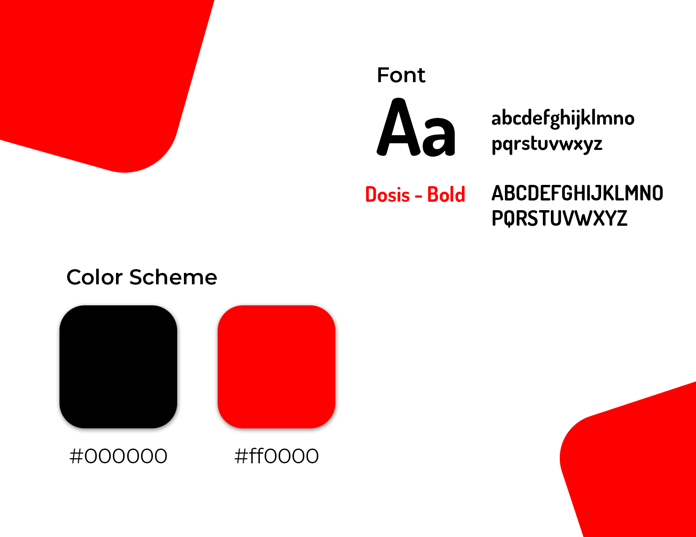
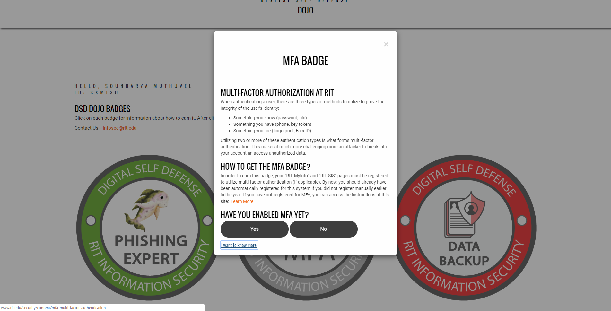

Introduction
This project is a gamification initiative taken by the RIT Information Security Office to spread security awareness among the staff and faculty at RIT. Digital Self Defense (DSD) is an instructional course that is mandatory for all staff and faculty to enroll in, to ensure that they are up to date on the security standards and practises. DSD Dojo is a game where RIT users can enroll and finishs tasks set by the Information Security Office and win prizes.
Digital Self Defense
The Information Security Office provides Digital Self Defense training courses scheduled through the Center for Professional Development or by request. The program is divided into three courses: Introduction, Desktop Security Tools, and Information Handling.
These courses aim at ensuring that all RIT staff and faculty abide by the prescribed security standards to make sure that RIT's networks are protected at all costs. Some of the best practices include:
- Encrypt data while sharing sensitive and confidential information.
- Enable Mutli-Factor Authorization while entering RIT login credentials
- Back-up data everyday.
- Take DSD 100, DSD 101 and DSD 103 courses and learn to identify phishing emails.
- Scan work/official devices everyday to identify personal/sensitive information stored on the device without protection.
- Create better passwords and use a password safe.
- Install and use security applications such as anti-virus apps, in all mobile devices.
- Attend departmental security training conducted by the ISO.
This is the original Digital Self Defense Logo courtesy of Ben Woelk
Conception of DSD Dojo
Logo and its Components
In keeping with the theme of creating a "martial arts" form, I took the branding a step further by drawing a Japanese inspired Dojo. The strokes of the logo are representative of Chinese/Japanese style of drawing with a brush. Furthermore, I inserted the original DSD Logo for consistent branding.
Color Scheme & Font
Both DSD and DSD Dojo were communications initiative from the InfoSec Office, so we had a little bit of a leeway when it came to choosing a color scheme. In my conversations with my supervisor, we came to a consensus that we will use bright colors yet choose colors that were just a step away from RIT's orange and brown. In order to stay consistent with the RIT Information Security Logo and other communications from the InfoSec Office, I chose Dosis to be the font. Since Dosis is sans-serif with rounded edges, it looks playful and inviting.
DSD Dojo Badges
This is an initiative to engage all of RIT Staff and faculty in secure online practices and teach them ways in which they can protect their personal information online. In addition to learning about the safe practices, the participants receive prizes and incentives.
Rules of the game:
- There are 15 badges and 4 belts in total.
- Treat each belt like a level, you start with white, go on to orange, then to brown and win the game with Tiger Belt.
- Every 3 badges you get, you get a new belt.
- However, the user needs to self report their security practices to obtain a badge.
- The winners of the belts and badges get a physical magnet

User Flow
This is a fairly simple website user flow. The aim of this site is for the users to learn about "Digital Self Defense" and make sure that they are upto date on security practices.
Since this was supposed to be an independent initiative, this website was a part of the RIT Web Environment and not the official Drupal Website. This gave me the freedom to use different front-end technologies. I used HTML, CSS and JavaScript for most of the site and made it responsive using BootStrap.
Site Setup and Flow Chart

The front page is a welcome or an "about" page that introduces the Dojo, which would eventually lead to the Dojo page. Initially, I wanted it to be a single page website which would simply contain the instructions to page the Dojo and win badges/belts. However, due to the technicality of creating an account in the database for every user required them to enter their login credentials. However, I was experimenting with foreshadowing and building up Dojo, since it was a very simple game to play.
I used PhP to setup and communicate with the database hosted by MariaDB. I created a table which creates a new entry anytime a new user logs in to the Dojo page and updates everytime they obtain a badge or a belt. The time/date of their latest visit was also recorded to evaluate any updation of their belt/badge status.
PhP was also used in creating the quizzes and self-report modals. This helped in maintaining a uniform variable cluster, rather than going back and forth with JavaScript.
Visit Site Here: Click Here
Site Pages

Incentives and Pilot Test Reaction
The physical magents were delivered to each and everyone who won a badge or a belt and they proudly displayed it in their office. Some even posted pictures of it in their Social Media.
The general reaction was positive and we got about 80% in our pilot test when we conducted in the Department of Alumni Relations which had about 140 staff members. We got calls about how reinforced security measures they were supposed to take in order to keep RIT safe from online threats.
This initiative was featured in 'The Chronicle of Higher Education' as one of three schools with interesting take on 'On Campus Cybersecurity Culture'.
Read the article: Click Here